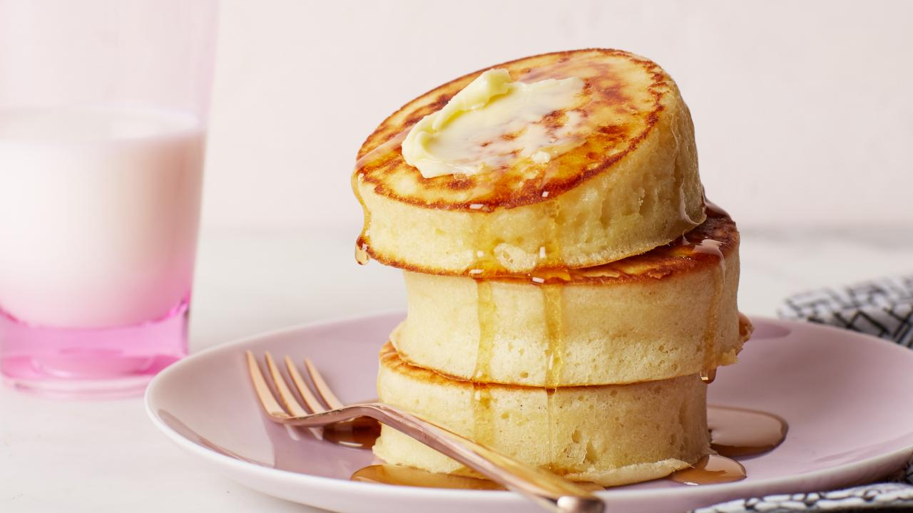

Fluffy Pancakes Recipe

Fluffy pancakes are a fantastic breakfast item to
make when craving something fulfilling and tasty.
The total time to make this recipe is negligable, taking only around
20 minutes from when you begin prepping to when you can start eating
Ingredients
- ¾ cup milk
- 2 tablespoons white vinegar
- 1 cup all-purpose flour
- 2 tablespoons white sugar
- 1 teaspoon baking powder
- ½ teaspoon baking soda
- ½ teaspoon salt
- 1 egg
- 2 tablespoons butter, melted
- cooking spray
Steps
- Combine milk and vinegar in a medium bowl and set
aside for 5 minutes to make sour milk.
- Combine flour, sugar, baking powder, baking soda, and salt
in a large mixing bowl. Whisk egg and butter into soured milk.
Pour flour mixture into milk mixture and whisk until lumps are
gone.
- Heat a large skillet over medium heat, and coat it with cooking
spray. Pour 1/4 cupfuls of batter onto the skillet, and cook until
bubbles form and the edges are dry, about 2 to 3 minutes.
Flip with a spatula, and cook until browned on the other side.
Repeat with remaining batter.